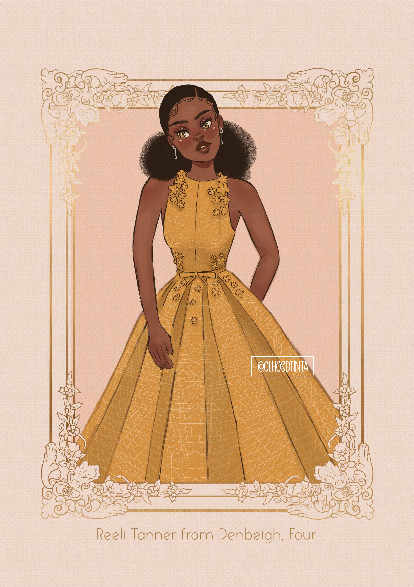

Reeli Tanner de Denbeigh

Reeli Tanner foi um personagem coadjuvante em A Seleção. Ela foi uma Quatro escolhida para a Seleção. Ela foi uma das primeiras oito garotas que Maxon eliminou da Seleção no primeiro dia.